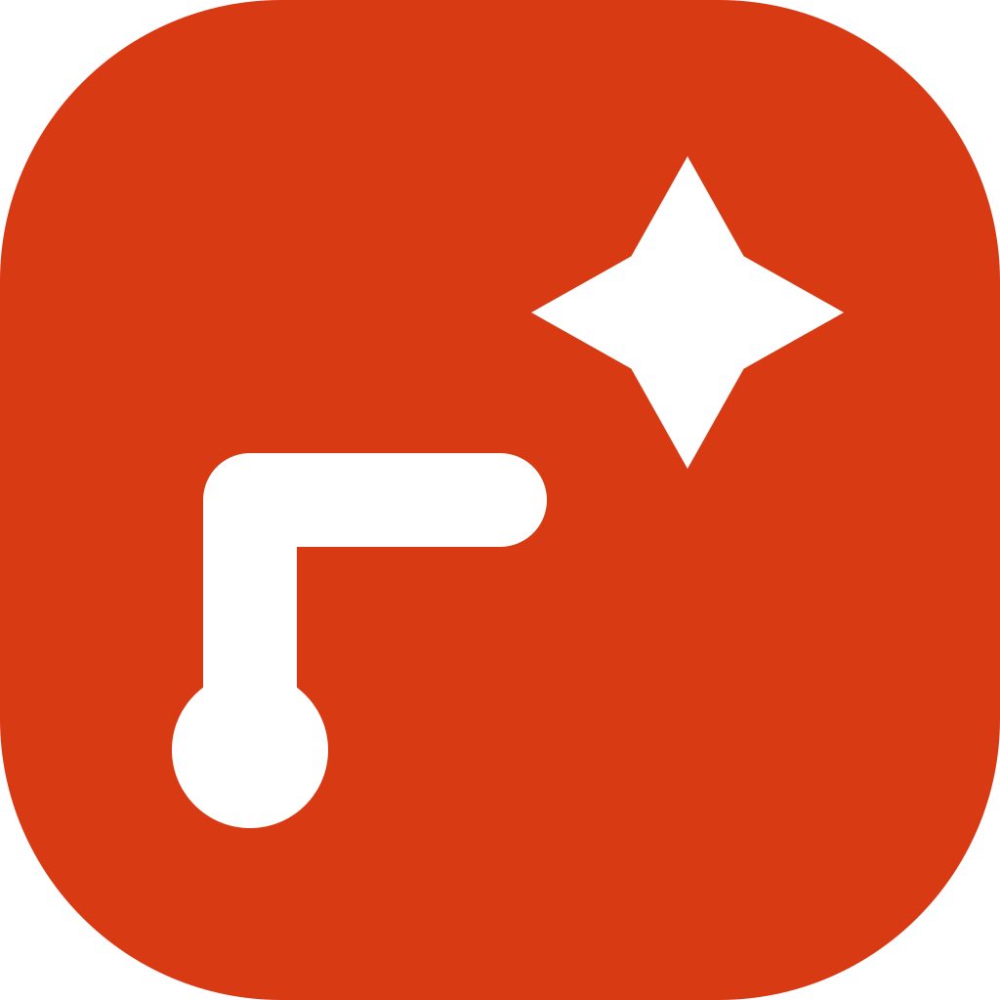

Review queue
Events the pipeline held back. Publish what belongs, reject what does not; the pipeline never changes a decision made here.

WanderAltEvents the pipeline held back. Publish what belongs, reject what does not; the pipeline never changes a decision made here.